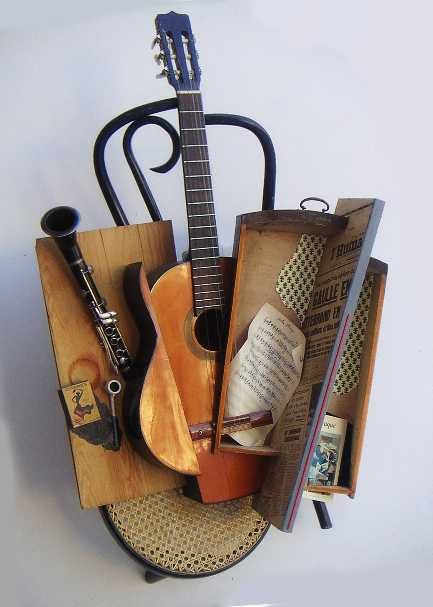

The Hinterlands weave of a tapestry of stories through music. Standards from the American song book, trad-jazz, Dixieland, old-timey cowboy songs, heartfelt blues, songs of the field and prairie and songs of the mountains and the swamps. They play American music.
Brother, Can You Spare a Dime - clarinet solo